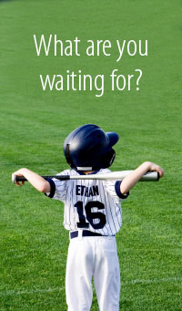
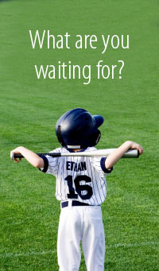

4/30/12
Almost done!! Touching everything up, don't think I'll have time to add animations to my Connect four though. Just adding links and filling in content on other pages of the site at this point.
4/28/12
So...I'm still not sure exactly what you guys want this site to be like. I understand what liquid layout is, and all of my widths are % based, but my pictures and links get all screwed up when I make the window smaller. After getting mad at how bad it looks when my icons jump off the nav cuz the window is too small, I added a min-width so that my site behaves like the IGN site. I know there are other ways to remedy this but I'm not sure how to implement. So far as I know this is still liquid because everything is percentage based.
4/27/12
NOOOO, the svg animation I used for Connect Four doesn't seem to be supported in Firefox, only working in Chrome. Guess im starting over in JS...
4/25/12
Been working on the site, I think I'm doing the liquid layout stuff right but I'm not positive. Why don't they teach us anything useful in school?!?!? On the bright side, I got the animations working for my Connect Four
4/21/12
Finished the License Plate Program in javascript. Got most of the homepage for the site done too. Now to study for finals! Woohoo!